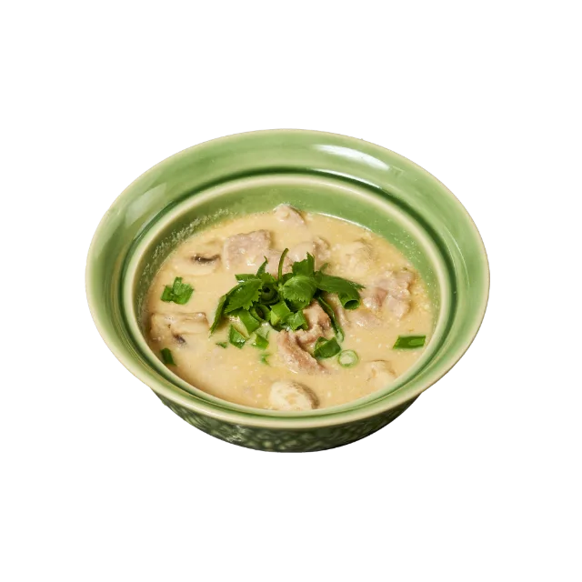
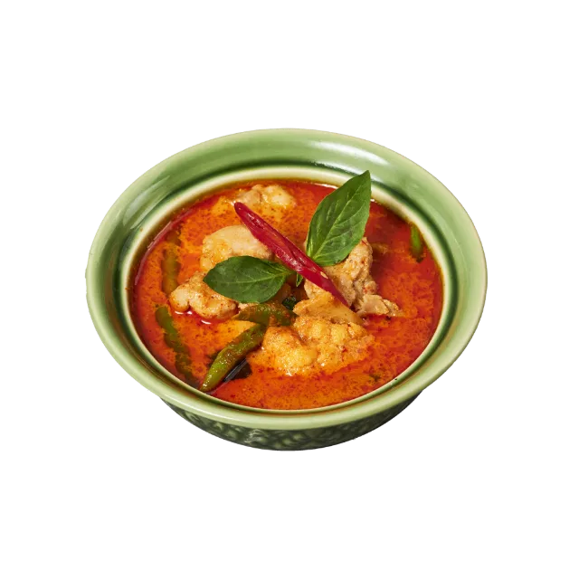
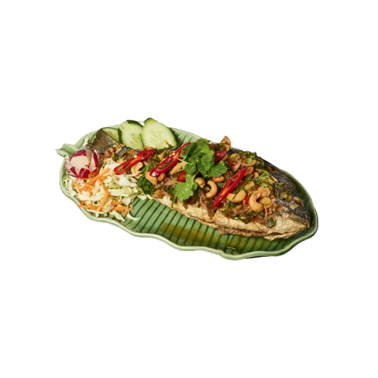

Tom Kha Kai
Licht pittige soep met kokosmelk, limoensap en kip
€ 8,00Authentiek Thais fast food op het Stratumseind in Eindhoven. Schuif aan in ons knusse restaurant, of bestel en haal af.
Open vanaf 16:00 uur, in het weekend vanaf 12:00 uur
Krapau, papaya salade, Phad Thai, Thaise curry en nog veel meer. Voor ieders smaak een antwoord.

Licht pittige soep met kokosmelk, limoensap en kip
€ 8,00Thaise gebakken noodles met kip
€ 15,50
Thaise rode curry met groenten en kip
€ 19,00
Bij Spice Up hebben we de Thaise keuken in ons bloed zitten. Ben je op zoek naar authentiek Thais eten, dan moet je ons minimaal eens geprobeerd hebben. Met Thaise specialiteiten zoals Krapau, papaya salade, Phad Thai, Thaise curry en nog veel meer hebben we voor ieders smaak een antwoord.
Bij Spice Up staat service hoog in het vaandel. We willen dat iedereen zich welkom voelt in ons knusse restaurant, en daarom krijg je bij ons altijd service met een glimlach. Of je nu komt afhalen of gezellig komt eten: wij zorgen voor een prettige ervaring.
Een hapje eten in de zaak aan het Stratumseind. Reserveer je tafel online.
Reserveer een tafelThais afhalen? Bestel gemakkelijk online en haal je bestelling op bij Spice Up.
Bestel onlineLiever thuis eten? Laat je bestelling bezorgen via Thuisbezorgd of Uber Eats.
Online bestellen bij Spice Up zelf is alleen voor afhalen.
| Maandag | 16:00 – 22:00 |
|---|---|
| Dinsdag | Gesloten |
| Woensdag | 16:00 – 22:00 |
| Donderdag | 16:00 – 22:00 |
| Vrijdag | 16:00 – 22:00 |
| Zaterdag | 12:00 – 22:00 |
| Zondag | 12:00 – 22:00 |